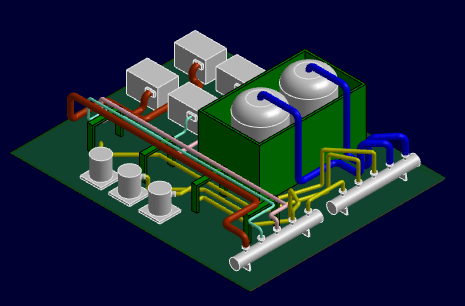
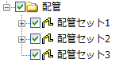

コンポーネント間に配管を作成します。

配管機能を利用するには、あらかじめパイプ接続位置が定義されたコンポーネントを作成する必要があります。
作成中に右クリックでコンテキストメニューを表示すると以下の操作が可能です。 ・ 一つ前の点選択クリア - 一つ前のパイプの曲げ位置をクリアします ・ マニピュレータ設定 - マニピュレータ設定コマンドで任意の位置と軸方向を設定できます ・ マニピュレータの軸をワーク座標系に設定 - マニピュレータの位置はそのままで軸方向をワーク座標系に設定します
作成されるパイプの直径を入力します。
パイプを繋ぐエルボの半径を入力します。
配管作成の時に、軸方向や平面、エルボの角度により、自動でパイプに拘束を付加することが出来ます。
対象の拘束タイプは次の通りです。
パイプの自動拘束のOn/Offは配管オプションで変更できます。
拘束対象となるXYZの各軸や平面は、ワーク座標系のものが参照されます。
配管作成時に、パイプを選択するとパイプの途中へティー形状を挿入することができます。
また、エルボを選択した場合にも、エルボからティーへ変換されます。
配管作成時に終点となる接続点をピックすると、終点までのルートを自動計算して、選択ウィンドウで候補が表示されます。
各番号にマウスカーソルを合わせるとプレビューが更新され、番号をクリックするとパイプ形状が作成されます。
作成されたパイプは繋がっている単位で配管セットとして管理されます。
モデル構成ウィンドウでは、配管フォルダの中に配管セットが作成されます。

2つの配管セットを配管作成コマンドで接続すると、配管セットがマージされて一つになります。
作成したパイプは以下のコマンドで利用することができます。